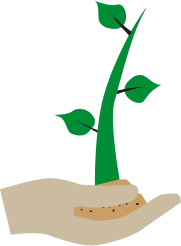

Welkom op mijn website!
Deze website gaat over het hebben en onderhouden van een moestuin. Ik deel hier onder andere mijn eigen ervaringen met de moestuin bij ons thuis en ik laat je zien hoe je makkelijk zelf je eigen moestuin kunt beginnen.
Een moestuin is niet alleen iets wat je op het platteland vindt, dit kan zelfs op je dakterras! Dus wil jij je eigen moestuin beginnen in de stad? Dan is deze website perfect!